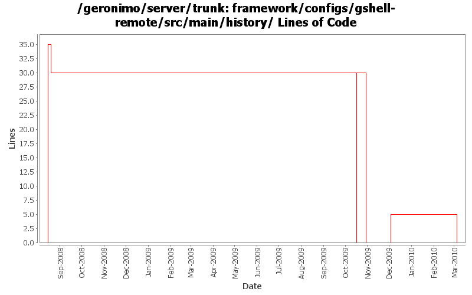

[root]/framework/configs/gshell-remote/src/main/history

| Author | Changes | Lines of Code | Lines per Change |
|---|---|---|---|
| Totals | 9 (100.0%) | 87 (100.0%) | 9.6 |
| djencks | 5 (55.6%) | 86 (98.9%) | 17.2 |
| dwoods | 1 (11.1%) | 1 (1.1%) | 1.0 |
| gawor | 3 (33.3%) | 0 (0.0%) | 0.0 |
GERONIMO-5169: Remove some GShell modules
0 lines of code changed in 1 file:
use bundleized dwr. Start trying to not use spring in pluto. Mysterious linkage error building console-tomcat
5 lines of code changed in 1 file:
generate much saner dependency information and reduce number of packages exported via system bundle in car maven plugin
0 lines of code changed in 1 file:
GERONIMO-4916 step 2 move sandbox osgi framework into trunk
30 lines of code changed in 1 file:
GERONIMO-4916 step 1 remove old framwork
0 lines of code changed in 1 file:
update other XML files with embedded versions from 2.2-SNAPSHOT to 3.0-SNAPSHOT
1 lines of code changed in 1 file:
GERONIMO-4692 sort dependencies.xml, except for connector-1_6
16 lines of code changed in 1 file:
get rid off commons-logging logging dependency which we get through commons-vfs even though we have no direct depedency on it (GERONIMO-4233)
0 lines of code changed in 1 file:
GERONIMO-4248 Add dependency history files
35 lines of code changed in 1 file: